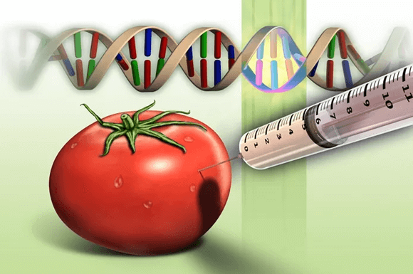
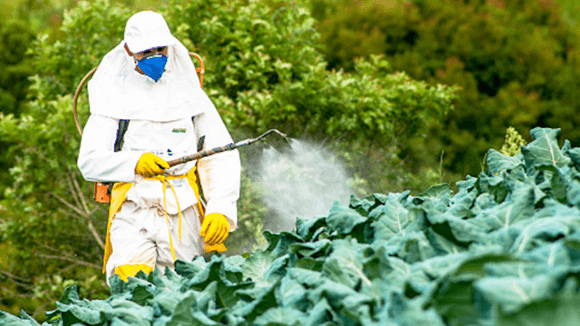
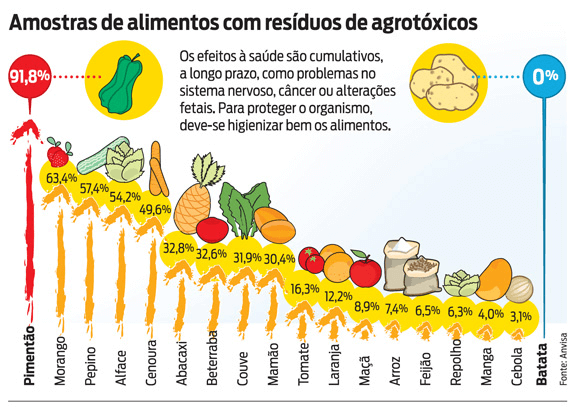
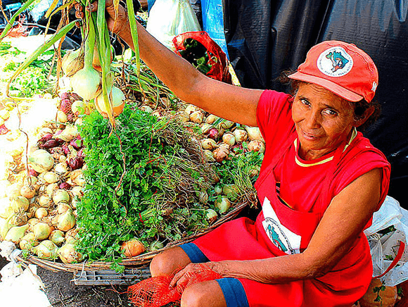
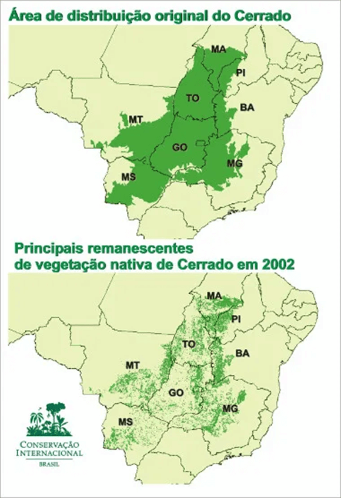
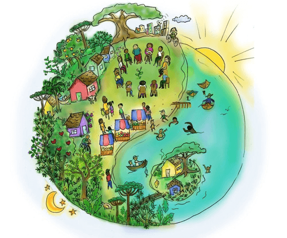
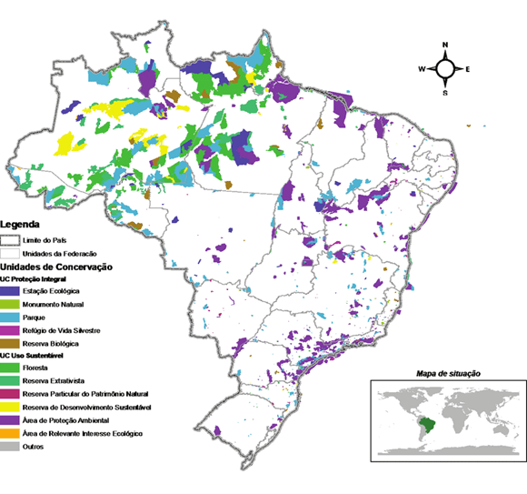
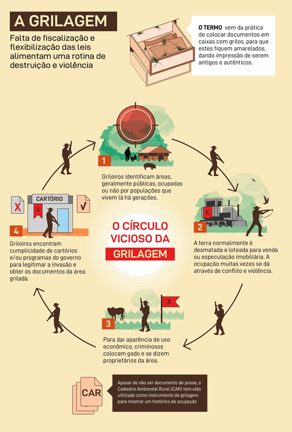

Conteúdo: transgênicos; agrotóxicos; soberania alimentar; desmatamento; agroecologia; Áreas de preservação; Reservas naturais.
Objetivo: Compreender a importância de práticas agrícolas que respeitem a biodiversidade e a alimentação saudável e sustentável.
Digite seu nome
Na aula passada vimos a produção agropecuária brasileira e os tipos de cultivo.
Na aula de hoje veremos o impacto disso no território em relação à biodiversidade, além das áreas de preservação no território brasileiro.
A modernização agrícola trouxe avanços significativos na produtividade, mas também levantou diversas questões socioambientais. Para entender esses impactos, exploramos temas como transgênicos, agrotóxicos, soberania alimentar, desmatamento, agroecologia, áreas de preservação, reservas naturais e outras técnicas e práticas agrícolas.
Transgênicos

Fonte: g1.comOs transgênicos são organismos geneticamente modificados (OGMs), cujos códigos genéticos foram alterados para melhorar características como resistência a pragas e produtividade. No Brasil, a soja transgênica é amplamente cultivada, representando mais de 96% da produção total de soja do país. Embora os transgênicos possam aumentar a produção e reduzir o uso de pesticidas, eles também geram controvérsias sobre a segurança alimentar e o impacto ambiental a longo prazo.
Exemplo Prático: A soja RR (Roundup Ready) é um tipo de soja geneticamente modificada para ser resistente ao herbicida glifosato. Isso permite aos agricultores aplicar o herbicida diretamente nas lavouras, eliminando as ervas daninhas sem afetar a soja. No entanto, o uso intensivo de glifosato tem sido associado à resistência de ervas daninhas e à contaminação ambiental.
Agrotóxicos

Fonte: poder360.comOs agrotóxicos são produtos químicos usados para controlar pragas, doenças e ervas daninhas nas plantações. O Brasil é um dos maiores consumidores de agrotóxicos do mundo. O uso intensivo desses produtos tem levantado preocupações quanto à saúde humana, contaminação do solo e água, e a resistência de pragas.
Dados do Brasil: Em 2019, o Brasil aprovou o registro de mais de 400 novos agrotóxicos. Estudos indicam que aproximadamente 20% dos alimentos consumidos no país contêm resíduos de agrotóxicos acima dos limites permitidos.

Soberania Alimentar
Soberania alimentar refere-se ao direito dos povos de definirem suas próprias políticas e estratégias sustentáveis de produção, distribuição e consumo de alimentos, assegurando o acesso a alimentos nutritivos e culturalmente adequados.
Exemplo Prático: No Brasil, movimentos como o MST (Movimento dos Trabalhadores Rurais Sem Terra) defendem a reforma agrária e a agroecologia como caminhos para garantir a soberania alimentar. Eles promovem a produção de alimentos sem o uso de agrotóxicos e a preservação das sementes crioulas.

Fonte: https://www.brasildefatope.com.br/2021/07/12/soberania-alimentar-25-anos-de-construcaoDesmatamento
A modernização agrícola, especialmente a expansão da fronteira agrícola, tem contribuído significativamente para o desmatamento no Brasil. A Amazônia e o Cerrado são biomas particularmente afetados pela conversão de florestas em áreas agrícolas e pastagens.
Dados do Brasil: Entre agosto de 2019 e julho de 2020, o desmatamento na Amazônia brasileira aumentou 9,5%, atingindo 11.088 km². A principal causa é a expansão agrícola e pecuária.

Fonte: https://mundoeducacao.uol.com.br/geografia/degradacao-cerrado.htm
A agroecologia propõe práticas agrícolas que respeitam os processos ecológicos, a biodiversidade e a sustentabilidade social. Ela integra conhecimentos tradicionais com técnicas modernas para promover sistemas agrícolas sustentáveis e resilientes.
Exemplo Prático: A técnica agroflorestal, que combina cultivos agrícolas com árvores, é usada em várias regiões do Brasil. Um exemplo é o projeto Agroflorestal no assentamento Sepé Tiaraju, no Paraná, onde a integração de árvores frutíferas e madeira com cultivos anuais tem aumentado a produtividade e a sustentabilidade ambiental.
Áreas de Preservação
As áreas de preservação permanente (APPs) e as reservas legais são mecanismos importantes no Brasil para proteger recursos hídricos, a biodiversidade e prevenir desastres naturais.

Exemplo Prático: As margens do Rio São Francisco são áreas de preservação permanente que ajudam a proteger as nascentes e a qualidade da água. As APPs garantem a conservação de matas ciliares, fundamentais para a proteção do solo e da água.
Reservas Naturais
Reservas naturais no Brasil incluem Parques Nacionais, Florestas Nacionais e Reservas Extrativistas, que variam em termos de uso permitido e níveis de proteção.
Exemplo Prático: O Parque Nacional do Iguaçu, no Paraná, é um exemplo de área protegida que permite apenas atividades científicas e turísticas controladas. Já a Reserva Extrativista Chico Mendes, no Acre, permite o uso sustentável dos recursos naturais por populações tradicionais, combinando conservação com desenvolvimento socioeconômico.
Técnica de Controle Biológico
O controle biológico é uma técnica que utiliza organismos vivos para controlar pragas agrícolas. Em vez de usar agrotóxicos, os agricultores introduzem predadores naturais das pragas nas lavouras.
Exemplo Prático: O uso de joaninhas para controlar pulgões em plantações de hortaliças é uma prática comum no Brasil, reduzindo a necessidade de pesticidas químicos e promovendo um ecossistema agrícola mais equilibrado.
Uso de Fertilizantes
Os fertilizantes são essenciais para repor nutrientes no solo e aumentar a produtividade agrícola. No entanto, o uso excessivo pode levar à contaminação dos cursos d'água e à degradação do solo.
Dados do Brasil: O Brasil é um dos maiores consumidores de fertilizantes do mundo. A agricultura brasileira depende fortemente de fertilizantes sintéticos, especialmente em culturas como soja, milho e cana-de-açúcar.
A madeira de reflorestamento é uma alternativa sustentável à extração de madeira de florestas nativas. Ela contribui para a redução do desmatamento e promove a sustentabilidade.
Exemplo Prático: No Brasil, o eucalipto é amplamente utilizado em projetos de reflorestamento para produção de papel, celulose e carvão vegetal. A prática ajuda a conservar as florestas nativas e a fornecer uma fonte renovável de madeira.
Impermeabilização do Solo
A impermeabilização do solo ocorre quando a superfície do solo é coberta por materiais que impedem a infiltração de água, como concreto e asfalto. Isso pode levar a problemas como inundações e erosão do solo.
Exemplo Prático: A expansão urbana desordenada em áreas agrícolas pode resultar na impermeabilização do solo, aumentando o escoamento superficial e diminuindo a recarga dos aquíferos.
Grilagem de Terras

Fonte: ecodebate.comA grilagem de terras é a apropriação ilegal de terras públicas ou privadas por meio de fraudes e falsificações de documentos. Este fenômeno é comum em regiões de expansão agrícola no Brasil.
Exemplo Prático: Na Amazônia, a grilagem de terras é um problema sério, com grandes áreas de floresta sendo ilegalmente convertidas em pastagens ou áreas agrícolas, exacerbando o desmatamento e os conflitos fundiários.
Diversidade de Vida no Solo com o Aumento da Matéria Orgânica
O aumento da matéria orgânica no solo melhora sua fertilidade e promove a diversidade biológica, incluindo microrganismos benéficos, minhocas e outros organismos que ajudam na decomposição e ciclagem de nutrientes.
Exemplo Prático: A adição de composto orgânico nas plantações de hortaliças melhora a estrutura do solo, aumenta a retenção de água e nutrientes, e promove uma maior diversidade de vida no solo, resultando em plantas mais saudáveis e produtivas.
Utilização Sustentável dos Recursos Naturais
A utilização sustentável dos recursos naturais envolve práticas que não esgotem os recursos e permitam sua renovação para as futuras gerações.
Exemplo Prático: A prática de rotação de culturas, uso de adubação verde e conservação de nascentes são exemplos de técnicas que promovem a sustentabilidade na agricultura brasileira, garantindo a manutenção dos recursos naturais a longo prazo.
P: Como a utilização de fertilizantes pode impactar a sustentabilidade agrícola?
R: O uso de fertilizantes é essencial para repor nutrientes no solo e aumentar a produtividade agrícola. No entanto, o uso excessivo pode levar à contaminação dos cursos d'água e à degradação do solo. Para promover a sustentabilidade, é importante usar fertilizantes de forma equilibrada e complementar com práticas como a adubação verde e a rotação de culturas, que ajudam a manter a fertilidade do solo a longo prazo.
P: Quais são os benefícios da técnica de controle biológico em comparação ao uso de agrotóxicos?
R: A técnica de controle biológico utiliza organismos vivos para controlar pragas agrícolas, como o uso de joaninhas para controlar pulgões. Os benefícios incluem a redução da necessidade de pesticidas químicos, minimizando a contaminação ambiental e os riscos à saúde humana. Além disso, promove um ecossistema agrícola mais equilibrado e sustentável, preservando a biodiversidade e a qualidade do solo.
P:Como a prática de agroecologia pode ajudar a combater o desmatamento no Brasil?
R: A agroecologia promove práticas agrícolas sustentáveis que respeitam os processos ecológicos e a biodiversidade, como a técnica agroflorestal e a agricultura orgânica. Ao integrar árvores e cultivos agrícolas, a agroecologia ajuda a conservar as florestas nativas e a reduzir a pressão por novas áreas de cultivo, combatendo o desmatamento. Além disso, contribui para a sustentabilidade social, garantindo a segurança alimentar e promovendo a utilização sustentável dos recursos naturais.
MARIANO, Maryelle Florêncio (et al.). Geografia do Brasil. Londrina: Editora e Distribuidora Educacional S.A., 2018.
VESENTINI, José William. Geografia: o mundo em transição. Ensino médio. 2. ed. - São Paulo: Ática, 2013.